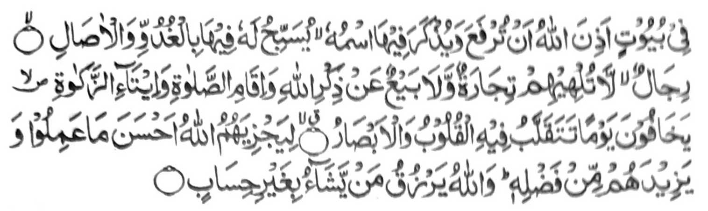

"Zisi-i ko manga walay a inisogo o Allah so kasela-aon, go so kapekha-aloy ron o ngaran Niyan, gi-i zambayang a bagi-an Niyan ro-o ko manga kapita-pita go so manga kagabi-gabi. So manga mama a di kiran phakasendod so kapamasa go so kaphasa pho-on ko tadem ko Allah, go so kipamayandegen ko Sambayang, go so katonaya ko Zakat: Ipekhalek iran so gawi-i a phananabaden ro-o so manga poso, go so manga kailay, -ka imbalas kiran o Allah so mapiya a pinggola-ola iran, go pagomanan Niyan siran ko kakawasa-an Niyan. Na so Allah a perizkiyan Niyan so tao a kabaya Iyan, sa di khasar a pandapal." [Soorah: An-Nur: 36-38]
So Abdullah bin Abbas (Radhiallaho ’Anho) na pitharo iyan, "So kipamayandegen ko Sambayang na aya ma-ana niyan na so kinggoIalanen ko Ruku ago Sojod phiya-piya ago so katatap o katetekhes o pamikiran ko Sambayang sa tarotop a kapangalimbaba-an ago kathapapay." So Qatadah (Radhiallaho 'Anho) na pitharo iyan, "Anda-i ka-aloy o 'Kipamayandegen ko Sambayang' sa Qur'an, na aya ma-ana niyan na so kasiyapa ko wakto niyan, so kapagabedas si-i ko titho a okit iyan ago so kinggoIalanen ko Ruku ago Sojod phiya-piya."